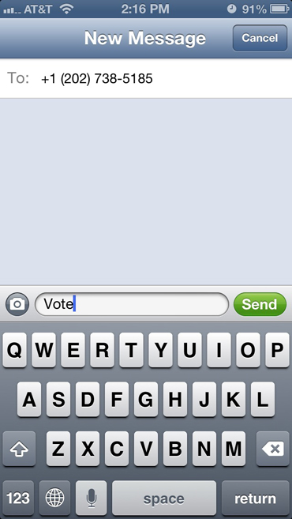
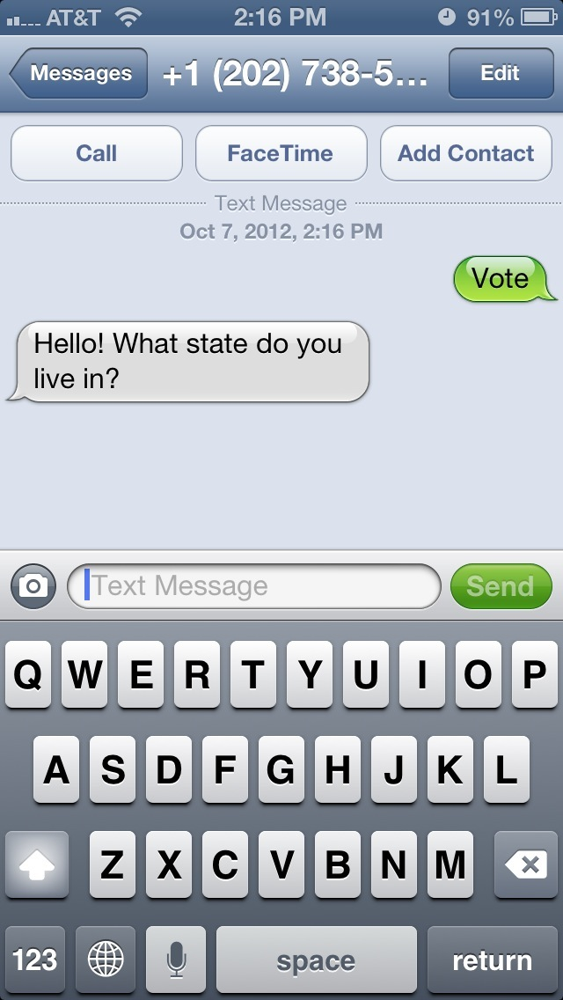
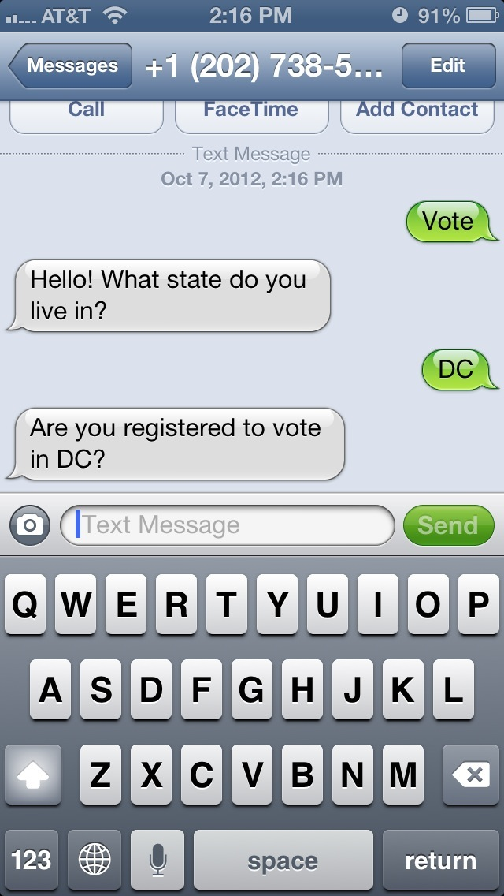
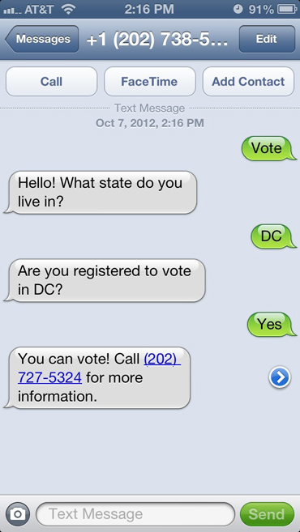

vote to On your mobile? Tap this to text us!
We're here to answer a not-so-simple question: Can I vote in the 2012 election?
Data used in this application came from The National Council of State Legislatures, NPR's early voting app and the Voting Info Project.
Can I vote? was created by Jason Bartz, Jeremy Bowers, Brian Boyer, Carlos Linares and Serdar Tumgoren while attending Election Hackathon 2012.
The code is on GitHub.
Confused?
Just text us...
Answer some questions...
  And puppies and rainbows.
BTW: This is not edited or ready for actual use. It is, at best, a demo.
>>>>>>> d1a1584f8f068c87cd8755b5979881c6eb5354f0